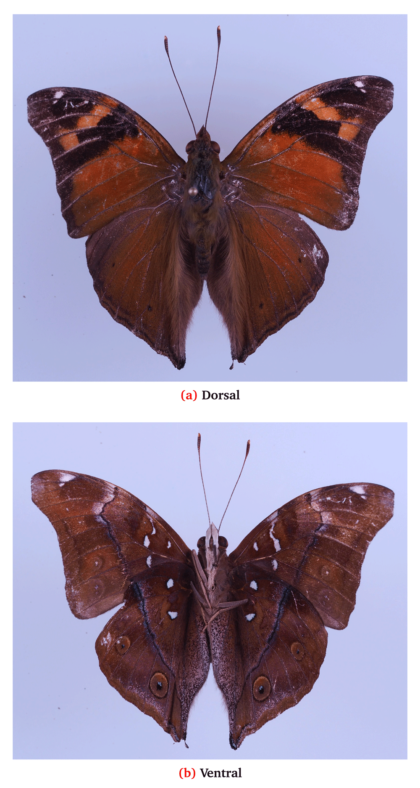

A single specimen of the butterfly,Doleshallia tongana Hopkins
1927, was collected on Guam Island on October 23, 2017 (13.430478°N,
144.800419°E). This is a new species record for Guam and Micronesia,
indicating a geographical range expansion for D. tongana.
Introduction
On October 23, 2017, a butterfly was taken from the underside of a leaf of soursop, Annona muricata,
by a student (JM) assembling an insect collection as a requirement for
the General Entomology course at the University of Guam. The collection
site was the University of Guam campus in Mangilao, Guam (13.430478° N,
144.800419° E).
The specimen was pinned, images were made (Figure 1), documented in iNaturalist1 and deposited in the University of Guam insect collection (Accession code: iNat8515898).
Figure 1. First specimen of Doleschallia tongana collected on Guam.
This specimen does not match any of the descriptions in Butterflies of Micronesia2, the standard reference for Guam’s butterflies.
Identification
Digital
images of the specimen were sent to DB and JT for identification. On 7
November 2017, DB tentatively identified the specimen as a species in
the genus Doleschallia, and indicated it possibly belonging to the bisaltide complex. On 24 February, 2018 JT determined the butterfly as Doleschallia tongana Hopkins, 1927, based on images and comparison with the extensive collections of the Natural History Museum, London.
In common with other species in the “bisaltide species-group, D. tongana is individually variable.
The convex outer margin of the forewing; the general appearance of the specimen; and geography all suggest D. tongana (tongana Hopkins, 1927, is a name to replace drusias Fabricius, 1781, the type locality for which is Tonga). Some minor ‘unusual’ features include the fact that tongana
usually has a sub-apical ‘half-moon’ series of 4–5 spots on the
forewing, lacking in this specimen, which only has two, but this lies
within the wide individual variation of the species. Considering a
distribution of Papua New Guinea (including the Bismarcks), the Solomon
Islands, Fiji, Samoa, Tonga and New Caledonia, we are confident of
associating this specimen with D. tongana. No doubt further material will confirm this association in due course. The species-group is in need of some revision3. The GBIF Backbone Taxonomy lists the accepted name for this taxon as Doleschallia bisaltide subsp. tongana Hopkins, 19274. However, the taxon record is tagged as a "name parent mismatch" issue.
D. tongana is listed in the iNaturalist database5 and has been assigned the vernacular name ’Pacific orange leafwing’.
Geographical distribution
D. tongana, as it is currently understood, occurs throughout much of New Guinea, including the island groups in the east (see above).
Occurrence of D. tongana in Samoa is a relatively recently recorded range expansion. It was first detected on Tutuila Island in American Samoa in 19976. Cook and Vargo 20006 state that "The inclusion of Samoa in this species’ range by Parsons, 19987 appears to be based on a misreading of Hopkins (1927)."
Description of caterpillar
Cook and Vargo 20006 provide a description of a last instar D. tongana caterpillar:
“Just
prior to pupation, the caterpillar measured ca. 50 mm in length. It
possessed a black ground color with light speckling dorsally and
prominent cream colored stripes running longitudinally, located
dorso-laterally and ventro-laterally. Each body segment had seven
prominent black spines, with numerous smaller secondary spines. The base
of each primary spine was pale metallic blue. From a distance, the most
prominent features of the caterpillar are the black ground color with
metallic blue spots, and the pair of light parallel stripes running
longitudinally on each side.“
Only a few larval host plants have been recorded for D.tongana (Table 1).
| Larval ho… | Reference… |
|---|
| Acanthace… | |
| Graptophy… | |
| Graptophy… | 8 |
Table 1. Larval host plants of Doleschallia tongana.
| Larval host plant | Reference(s) |
|---|
| Acanthaceae | |
| Graptophyllum | |
| Graptophyllum insularum | 8 |
| Graptophyllum pictum | 6,7 |
| Pseuderanthemum | |
| Pseuderanthemum carruther | 6 |
| Pseuderanthemum laxiflorum | 8 |
| Pseuderanthemum sp. | 9 |
| Moraceae | |
| Artocarpus | |
| Artocarpus altilis | 8 |
| Fabaceae | |
| Erythrina | |
| Erythrina sp. | 8 |
Discussion
An informal survey has been initiated on Guam to search for more specimens of D. tongana and to record host plants.
This insect has the potential to do economic damage because it has been reported to feed on breadfruit, Artocarpus altilis8.
Data availability
All data underlying the results are available as part of the article and no additional source data are required.
Competing interests
No competing interests were disclosed.
Grant information
The author(s) declared that no grants were involved in supporting this work.
F1000 recommendedReferences
- 1.
iNaturalist observation: Doleschallia tongana . 2017. Accessed: 2018-02-28. Reference Source
- 2.
Schreiner IH, Nafus DM:
Butterflies of Micronesia. University of Guam, 1997. Accessed: 2018-02-28. Reference Source
- 3.
Tennent WJ:
A checklist of the butterflies of Melanesia, Micronesia, Polynesia and some adjacent areas.
Zootaxa.
2006; 1178: 1–209. Reference Source
- 4.
GBIF: Taxon - Doleschallia bisaltide tongana Hopkins, 1927. 2018. Accessed: 2018-02-28. Reference Source
- 5.
iNaturalist taxon: Doleschallia tongana . 2018. Accessed: 2018-02-28. Reference Source
- 6.
Cook RP, Vargo D:
Range extension of Doleschallia tongana (Nymphalidae) to the Samoan archipelago, with notes on its life history and ecology.
J Lep Soc.
2000; 54(1): 33–35. Reference Source
- 7.
Parsons M:
The butterflies of Papua New Guinea: their systematics and biology. Academic Press, 1998. Reference Source
- 8.
Robinson GS:
Macrolepidoptera of Fiji and Rotuma, a taxonomic and biogeographical study. Classey, 1975.
- 9.
Holloway JD, Peters JV:
The butterflies of New Caledonia and the Loyalty Islands.
J Nat Hist.
1976; 10(3): 273–318. Publisher Full Text
Open Peer Review
(doi: 10.5256/f1000research.15578.r32407)
https://f1000research.com/articles/7-366/v1#referee-response-32407
Is the work clearly and accurately presented and does it cite the current literature?
Yes
Is the study design appropriate and is the work technically sound?
Yes
Are sufficient details of methods and analysis provided to allow replication by others?
Yes
If applicable, is the statistical analysis and its interpretation appropriate?
Not applicable
Are all the source data underlying the results available to ensure full reproducibility?
Yes
Are the conclusions drawn adequately supported by the results?
Yes
Competing Interests: No competing interests were disclosed.
https://f1000research.com/articles/7-366/v1#referee-response-32407